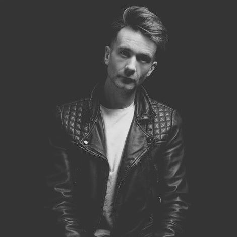

About Keith West
Photographer & Retoucher based in Surrey and London
Hi, I'm Keith West. I help brands, models, agencies, and HMUA create stunning imagery for portfolios and campaigns. My work combines technical expertise in photography and retouching with a keen eye for style, ensuring every shot looks exceptional.
I have a dedicated studio built inside a beautiful oak barn in Surrey, available for all packages and commercial work. The space is versatile and ideal for beauty, fashion, and portfolio shoots.
My Photography Journey
I began my photography career in Birmingham, shooting live music events and learning to capture mood, energy, and movement. Over time, I transitioned into commercial work, helping brands and creatives produce polished imagery for campaigns and portfolios.
I also lectured in photography at UCB, sharing my knowledge with aspiring photographers. Today, I focus on beauty and fashion photography, combining experience, creativity, and technical skill to deliver striking results.
